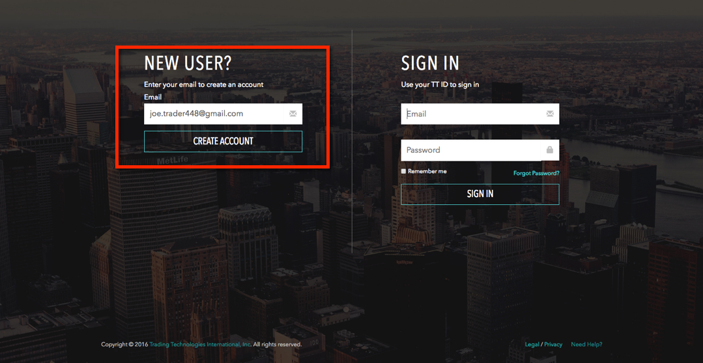
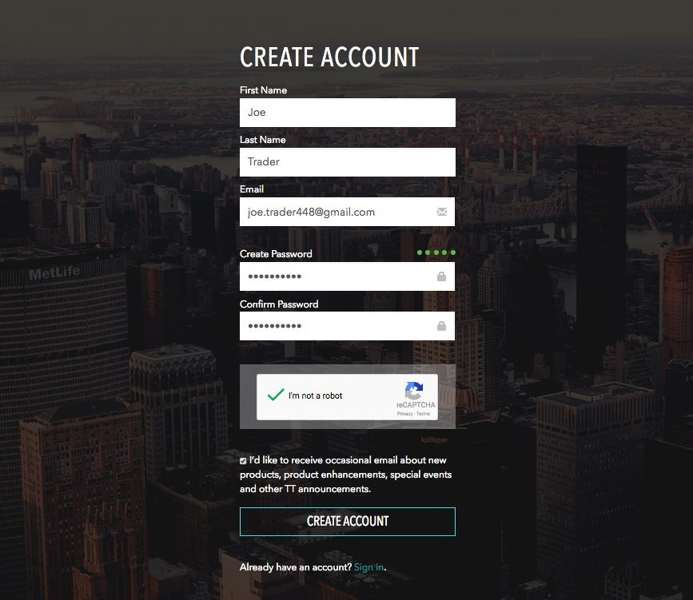
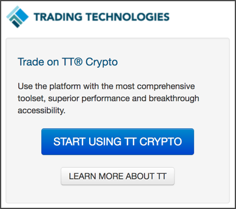
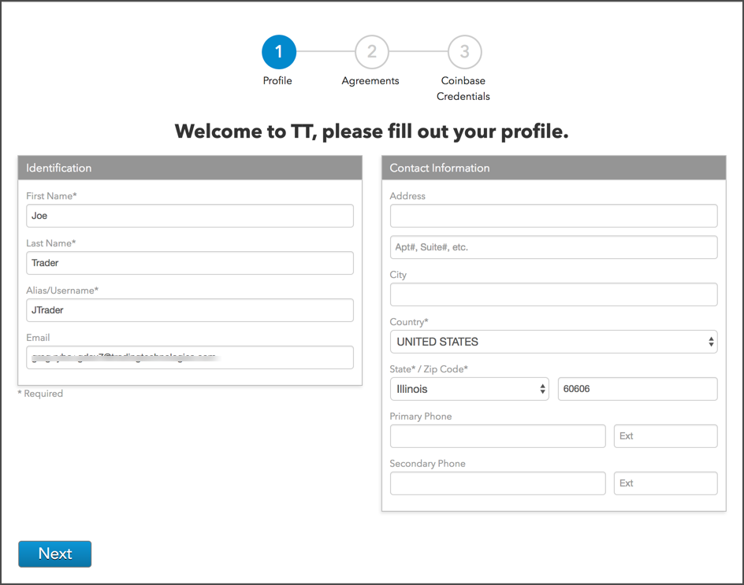
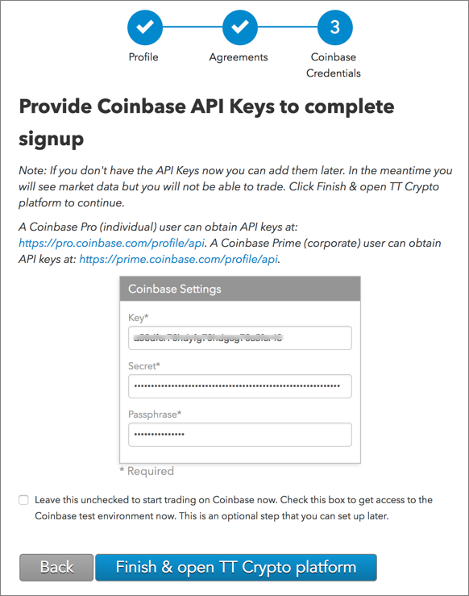
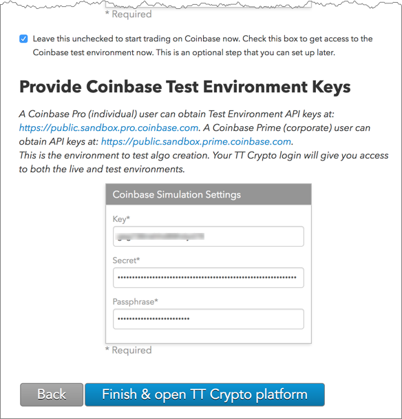

In the NEW USER? section of THE TT PLATFORM page, enter your email address and click CREATE ACCOUNT.

Complete the account creation form and click CREATE ACCOUNT.

After creating an account, you'll receive an email requesting you to "Confirm Email". Check your junk and spam folders for the email if you do not receive it immediately.

Click Start Using TT Crypto.

Complete your TT account profile and click Next.

Enter your Coinbase credentials and click Finish & Open TT Platform.
An API key, API secret, and passphrase are required for connecting to the exchange via TT.
If you do not have Coinbase credentials, you'll need to first create a Coinbase account and create an API key.

To enter API keys for the Coinbase test environment, check the following checkbox: Leave this unchecked to start trading on Coinbase now. Check this box to get access to the Coinbase test environment now. This is an optional step that you can set up later.

If you do not have Coinbase test environment credentials, you'll need to first create a Coinbase sandbox account and create an API key.